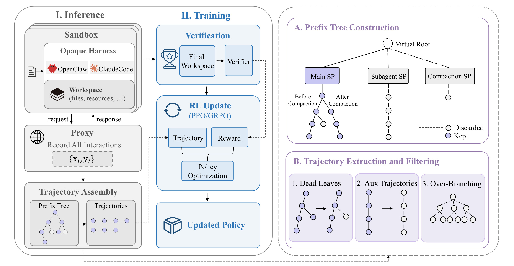
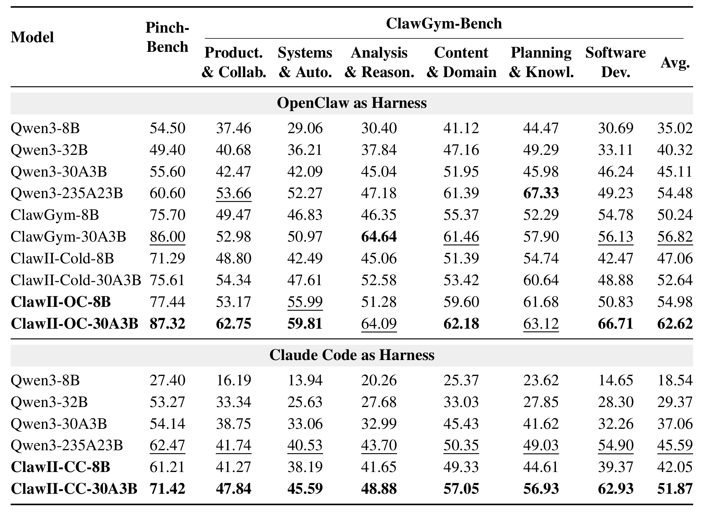
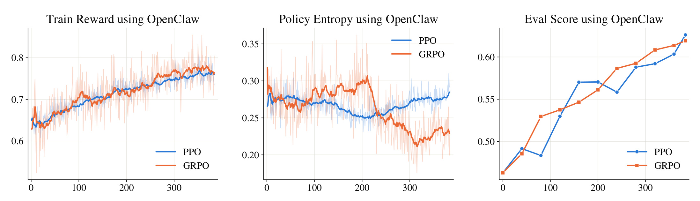
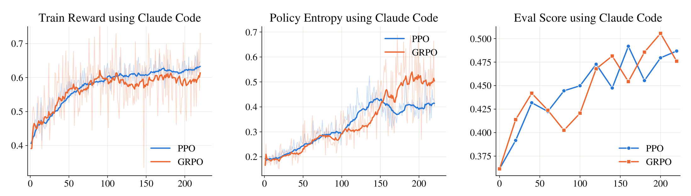
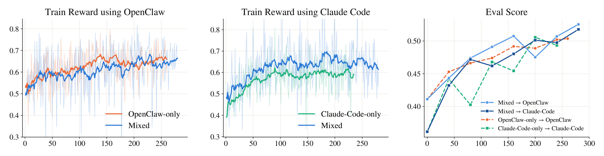
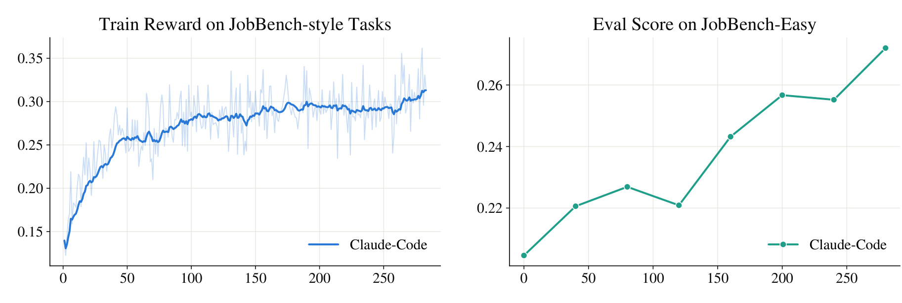
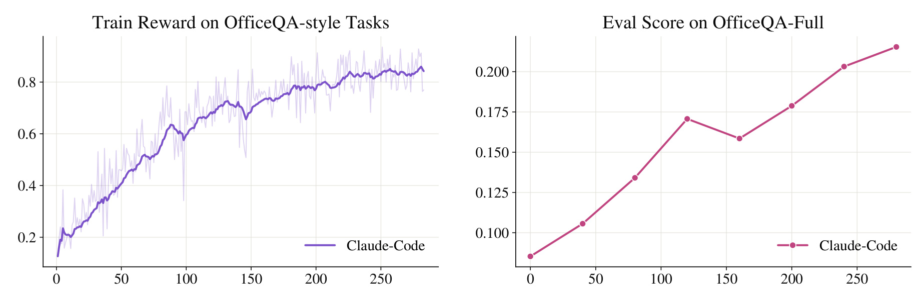
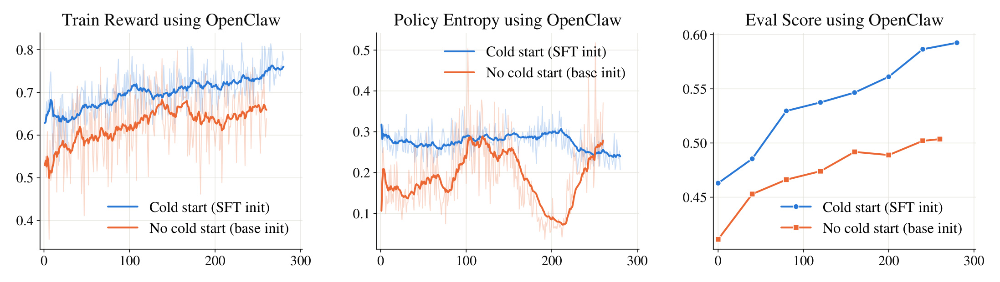
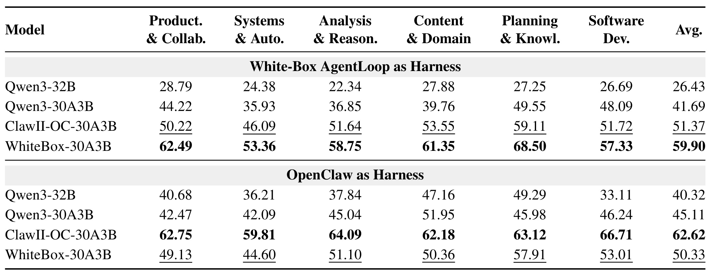
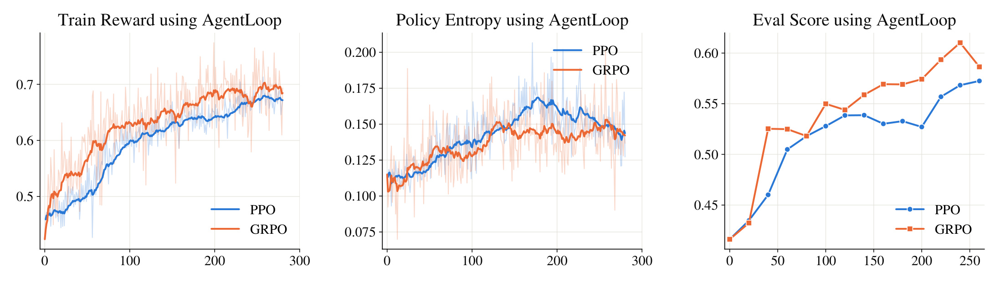

ClawGym II：在复杂 Agent Harness 上做黑盒强化学习
《ClawGym II: Exploring Black-Box RL on Agent Harness》由中国人民大学高瓴人工智能学院 Huatong Song、Fei Bai 等人与 IQuest Research 合作完成，于 2026 年 8 月 17 日公开。论文把 OpenClaw、Claude Code 这类成熟 Agent harness 直接当作不透明 rollout 引擎，研究如何在不改动其内部控制流的前提下训练底层模型。论文入口：arXiv:2608.16798。代码/项目页状态：论文没有给出 ClawGym II 方法的独立仓库，本笔记不列未经核验的实现链接。
复杂 harness 把长时程 Agent 的控制流、重试、上下文压缩和子代理调度隐藏在不透明执行层中；训练者只能看到碎片化、分叉且冗余的模型调用，却仍要在大规模有状态并发下恢复可优化轨迹、保持训练—推理一致，并让同一策略适配异构 harness。
1. 背景和问题
1.1 Harness 已经不是一段提示词，而是 Agent 的执行系统
现代通用 Agent 不再只靠一个手写 ReAct 循环完成任务。以 OpenClaw、Claude Code、Codex 为代表的 harness 会组合系统提示词、工具协议、上下文管理、工作流编排、失败重试、恢复策略和子代理调度；模型给出动作之后，真正决定“动作怎样落到 workspace、环境返回什么观察、下一轮上下文保留哪些内容”的是 harness。对软件工程、办公文档、网页操作和 MCP 工具任务而言，这个执行层往往决定 Agent 能否把几十乃至数百步操作串成一个可验收的最终状态。论文因此没有把 harness 当作外部包装，而是把它视为模型和环境之间的基本交互抽象：同一个基础模型置于不同 harness 中，看到的上下文、可用工具、失败恢复方式和最终表现都可能显著不同。
这也改变了后训练问题。普通文本强化学习可以直接观察一段完整生成，把 token 序列、奖励和策略概率送入优化器；简单 AgentLoop 也能显式记录“模型动作—工具执行—环境观察”的完整轨迹。但生产级 harness 内部常有请求重试、工具调用格式修正、上下文压缩、消息重序列化和子代理分叉。训练系统在模型服务边界看到的不是一条整齐的主轨迹，而是一组有共享前缀、替代分支、失效重试和辅助进程的模型调用。若把每次调用独立训练，会破坏长时程信用分配并重复计算共享历史；若粗暴地把最终 reward 广播给所有分支，又会把主任务、压缩摘要和子代理行为混为一谈。
1.2 黑盒 RL 的三个矛盾
第一个矛盾是并发规模与有状态环境隔离。ClawGym 一类任务的 reward 不来自一句答案，而来自最终 workspace：代码是否通过测试、文档是否满足 rubric、文件是否被正确修改。每个 rollout 都会改写文件、启动进程、调用服务并持续很长时间。大批并发如果共享环境会互相污染；逐个串行又无法提供强化学习所需的数据吞吐。长时程任务还会累积超时、连接中断和初始化失败，基础设施故障若被误判为策略失败，就会把错误 reward 写进优势估计。
第二个矛盾是不透明控制流与可训练轨迹。harness 对外只暴露模型请求，内部为何重试、何时压缩、怎样启动 subagent 并不可见。捕获到的调用既 fragmented 又 forked：后一个输入可能延续前一个响应，也可能从压缩后的上下文重新起步；一次非法工具调用还可能留下没有后续的 dead leaf。训练系统既要恢复真正的主代理路径，又不能让分叉较多的 rollout 因 token 重复而获得更大梯度权重。尤其是 PPO 需要 token 级价值估计，树上 sibling 分支的依赖怎样建模并没有天然答案。
第三个矛盾是原生执行与训练—推理一致性。harness 可能把模型生成的工具调用规范化、重新序列化，再把修改后的文本送回下一轮。如果训练端对重建文本重新 tokenizer，得到的 token 就不再是 rollout 时真正采样的 token。即使 token 完全相同，推理引擎与训练引擎的精度、kernel 和并行方式不同，也会让同一 token 的概率出现小偏差；对几万 token 的长轨迹，这种偏差可能累积为 off-policy 误差。ClawGym II 的核心问题因此不是“能否给 Agent 一个 reward”，而是如何把真实 harness 变成一个稳定、可扩展、可核验的训练接口。
1.3 论文的答案与评价边界
论文提出的答案有三层。系统层用临时 sandbox 隔离每个 rollout，并在模型服务边界部署 proxy；数据层把调用组织成 prefix tree，过滤 dead leaves、过度分叉和辅助交互；优化层把 PPO、GRPO 适配到恢复出的树结构，再用 token-in-token-out 和 rollout correction 保持一致性。最后，作者把 task 与 harness 组成训练实例，让 OpenClaw 与 Claude Code 的 rollout 在同一 batch 中联合更新一个策略，但优势归一化仍限制在各自 task-harness group 内。
这个研究问题与推荐系统也有直接联系。推荐、搜索和广告链路同样由召回器、重排器、策略规则、缓存、工具服务和交互反馈组成；当 LLM 作为上层决策 Agent 调用这些组件时，线上执行器就类似 harness。ClawGym II 提供的启发不是把其 Pass@1 直接迁移成 CTR，而是把“执行系统边界捕获、共享前缀去重、异构执行分组、训练服务概率校正”视为可复用的在线学习原则。与此同时，论文只验证两个 harness、一个主要骨干家族和有限任务分布，尚不能证明任意生产执行栈都能以同样成本和稳定性接入。
2. 方法
2.1 沙箱执行基础设施与 serving proxy
论文先形式化 harness 的作用。任务由用户指令与初始 workspace 组成，Agent 在多轮工具交互中把状态从 $W_0$ 推进到 $W_T$，最终由代码 verifier 或 rubric judge 给出 rollout-level reward。harness 不仅转发动作，还维护内部 context $c_t$，所以一次转移写成：
符号解释：$W_t$ 是第 $t$ 步 workspace 状态，$a_t$ 是模型动作，$o_{t+1}$ 是下一步返回给模型的观察，$c_t$ 是 harness 自己维护的上下文，$H$ 表示不透明执行逻辑。这个表达式强调模型并不独占轨迹生成权；训练时不需要打开 $H$，但必须在它与模型交界处准确记录行为。每个任务环境与所选 harness 被装进按需创建的临时 sandbox，MCP 服务和任务工具也在隔离环境内启动；完成、失败或超时后释放 sandbox，从而让有状态 rollout 可以并发而不互相污染。
关键设计是把 harness 保持为原生、未修改的 rollout 引擎，把可训练性放到模型服务边界。 serving proxy 接收 harness 的模型请求，调用当前 rollout policy，按原协议返回响应，同时记录精确 input tokens、generated tokens、rollout log-probabilities 与任务元数据。任务结束后 verifier 只检查最终 workspace，reward 和调用记录再交给训练引擎。训练引擎更新参数后同步到推理引擎，下一轮仍由原生 harness 控制工具、重试和上下文管理，因此接入新 harness 不需要复刻它的内部 agent loop。

Figure 1 把整条信息流分成推理与训练两半。左侧每个 sandbox 内是 opaque harness 和 workspace，所有模型 request/response 都经过 proxy；最终 workspace 由 verifier 评分。中部把记录组装成 prefix tree 与 trajectories，PPO/GRPO 接收 reward 后更新 policy。右侧不是装饰性的树图，而是数据治理规则：main-agent 路径可以保留，context compaction 和 subagent 会形成不同支路；重试产生的 dead leaves 被删去，辅助轨迹被排除，过度分叉的 rollout 整体丢弃。图中的虚拟根统一挂接共享 prompt，紫色节点表示保留，空心节点表示舍弃。这个结构把“系统可运行”和“梯度可用”连接起来，也明确揭示一个边界：当前方法宁可丢失辅助交互信息，也不愿把最终任务 reward 错配给角色不同的分支。
2.2 Prefix tree 轨迹恢复、过滤与树结构优化
proxy 捕获一次 rollout 的调用集合 $C=\{(x_i,y_i)\}_{i=1}^{m}$：$x_i$ 是第 $i$ 次模型输入，$y_i$ 是对应响应。构树时，每个调用连接到“累积历史能构成 $x_i$ 最长前缀”的已有节点；父响应与子输入之间多出的内容被还原为工具输出或环境反馈。上下文压缩会从缩短后的历史开新段，subagent 会从另一上下文开分支，而连续主代理调用继续延长同一路径。每个 root-to-leaf path 是候选轨迹，共享 prefix 只存一次。过滤阶段在每个 compaction segment 保留最长有效延续，删去 retry 造成的短 sibling；叶子数量超过阈值的任务被视为异常反复生成而整条丢弃；subagent 与 compaction trajectories 因 reward 归因不清也不进入优化。PPO 的基础目标先用掩码排除环境 token 和无效位置：
符号解释：$\theta$ 是 policy 参数，$\rho_t(\theta)=\pi_\theta(a_t\mid s_t)/\pi_{\theta_{\mathrm{old}}}(a_t\mid s_t)$ 是新旧策略的 token 概率比，$\hat A_t$ 是优势，$\epsilon$ 控制 clipping 区间，$M_t\in\{0,1\}$ 只让有效的 policy-generated token 贡献梯度。该 mask 很重要，因为 prefix tree 内既有模型 token，也有环境返回和 harness 插入内容；后者用于条件化下一步，却不应被当成模型动作优化。
符号解释：$\gamma$ 是折扣因子，$\lambda$ 控制 GAE 的偏差—方差权衡，$\delta_t$ 是 temporal-difference residual，$V_\phi$ 是参数为 $\phi$ 的价值模型，$r_t$ 是即时 reward。mask 同时进入 residual 的下一状态项和累积优势，避免 invalid token 参与时间信用分配。原论文在黑盒树分支上没有构造 sibling-aware 的价值传播，而是在后续适配中把每条分支独立处理，这是可实现性优先于严格树上信用分配的选择。
符号解释：$L_{\mathrm{Value}}$ 是 critic 的 masked 均方误差，$G_t$ 是 masked discounted return。它说明 PPO 除 policy 外还要维护 value model，增加显存、预训练和长时程回报估计成本。实验中 PPO 先做专门的 value pretraining；这也是作者用相同 rollout 总量比较 PPO 与 GRPO 时必须单独说明的资源差异。GRPO 不训练 critic，而在同一任务的一组 $G$ 个 rollout 内标准化最终 reward：
符号解释：$R_i$ 是第 $i$ 条 rollout 的最终 reward，$\mu_q$ 与 $\sigma_q$ 是任务 $q$ 的组内均值和标准差，$\varepsilon$ 防止标准差为零。优势在 rollout 级别产生，因此与 verifier 的最终 workspace 评分自然对齐；代价是每个任务要采样多条 rollout，且组内 reward 必须可比。mix-harness 时作者不让不同 harness 共享这组统计量，避免执行协议差异扭曲相对优势。
符号解释：$i$ 索引 rollout，$t$ 索引其 token，$\sum_t M_{i,t}$ 用于按有效 token 数归一化，$\beta$ 控制对参考策略 $\pi_{\mathrm{ref}}$ 的 KL 约束。与 PPO 相同，clipping 防止单次更新过大；与 PPO 不同，$\hat A_i$ 在一条 rollout 内共享，不依赖显式 value model。放到 prefix tree 上时，训练仍按保留节点计算，但 shared prefix 对同一 rollout 只计一次，避免分支多的样本被重复加权。黑盒树适配后的 GRPO 把组从普通 trajectory group 改成任务 $q$ 的 $n$ 个 rollouts，并把一次 rollout 的 reward 赋给其中所有保留主轨迹：
符号解释：这里 $n$ 是同一任务的 rollout 数，$R_i$ 只计算一次；$\hat A_i$ 被分配到 rollout $g_i$ 的所有保留 trainable token nodes。若多条 root-to-leaf 轨迹共享前缀，共享节点仍只对 loss 贡献一次。这样既保留分叉 continuation 的信号，又不让 prefix 重复次数改变 rollout 权重；不过所有分支继承同一终局 reward，细粒度分支信用仍没有被识别。PPO 对同一 rollout 内的每条分支轨迹独立回传，并设 $\gamma=1,\lambda=1$，使 GAE 简化为：
符号解释：$R_i$ 是该分支所属 rollout 的终局 reward，$V_\phi(s_t)$ 预测从当前历史状态到最终结果的回报，$\hat A_t$ 是 token 位置的优势。因为没有折扣且不跨 sibling branch 传递信号，critic 必须从很长的中间状态估计终局回报，优势方差可能升高。论文明确把更有原则的树上 PPO 信用分配留作未来工作，因此“已适配 PPO”不等于分叉依赖已经被严格解决。
2.3 Token-in-token-out 与 rollout correction
轨迹结构恢复后还要解决内容一致性。论文采用 token-in-token-out 的双视图：推理引擎真正采样的 token 连同 log probability 直接 graft 到 prefix tree，成为训练数据的唯一来源；给 harness 消费的 structured text 只是由同一 token 解码出来的运行视图，哪怕 harness 后续规范化工具调用或重排 assistant message，也不会再编码回已生成的训练片段。工具完成后的环境响应则按它在下一次模型请求中真正出现的形式编码并追加。这样训练端读取的是“模型确实采样过的 token”，而不是事后从日志文本猜测出的序列；但相同 token 在两套引擎中的概率仍可能不同：
符号解释：$\pi_{\mathrm{rollout}}$ 是推理引擎实际执行的 rollout policy，$\pi_{\mathrm{old}}$ 是训练引擎在更新前重新前向计算的旧策略概率，$a_t$ 是采样 token，$s_t$ 是其前缀状态。两者即便参数同步，也会因数值精度、kernel、并行切分和服务实现产生偏差。长轨迹若直接使用训练端概率，会把本来近似 on-policy 的数据变成带系统偏差的更新。
符号解释：$w_t$ 是乘到每个训练 token loss 上的 importance weight，两项 log probability 分别来自训练重算与 rollout 时记录，$\bar c$ 是截断阈值。序列级 importance ratio 在数万 token 上可能方差爆炸，作者因此采用 token-level 比率，以少量估计偏差换取更低方差，并用上限抑制离群值。这里的关键不是公式新颖，而是 proxy 必须把 rollout log probability 与精确 token 一同保存，否则 correction 无从计算。
2.4 Mix-harness 分组与可靠性保护
mix-harness 把训练基本单元从 task 改成 task-harness pair。同一任务环境分别交给 OpenClaw 与 Claude Code 执行，batch 内随机混合这些实例，但 GRPO 的均值、标准差和优势只在相同 pair 的 rollout 内计算；随后不同 group 的梯度再共同更新一个 policy。训练时的输入是异构 harness 产生的原生行为分布，推理时模型仍回到各自原生执行系统。这个分组策略避免 reward distribution 和交互长度差异污染相对排序，也意味着论文并未声称两个 harness 的 reward 可以直接横向比较。
工程保护覆盖三类失败。远程 sandbox 的 wall-clock timeout、HTTP/连接错误和初始化失败不计入 advantage，避免把基础设施异常误当负样本；流式工具调用采用 pseudo-streaming，生成过程中缓存 token 并发 synthetic SSE 保活，整轮结束后再用非流式 parser 一次解析，降低增量解析过早终止；异步 harness 结束后执行 settling，只有当记录数多次检查不变且无 pending record 才开始组装，另设总超时防止无限等待。这些机制没有直接改优化目标，却是 200–400 步稳定运行的必要条件，也提醒复现者必须把“算法稳定”和“rollout 数据质量稳定”分开监控。
3. 实验结果
3.1 总体性能：黑盒 RL 是否真的有效
主要实验以 Qwen3-8B 与 Qwen3-30A3B 为骨干，训练数据来自 ClawGym-SynData。OpenClaw 路线因数据可用性从轻量 cold-start 模型起步，Claude Code 路线直接从对应 base model 起步；所以两个 harness 的绝对学习曲线不能简单归因于 harness 本身。评测使用 ClawGym-Bench 与 2026 年 4 月 10 日版本的 PinchBench（去除多模态任务后保留 30 项），统一看 Pass@1。ClawGym-Bench 的纯代码 verifier 任务只用代码得分，代码加 rubric 的任务按 0.7 与 0.3 加权；rubric 判断使用 GPT-5.4。最大上下文为 64K，超长轨迹由各 harness 自己管理。

Table 1 应按“训练初始化—目标模型—同 harness 评测”读取。OpenClaw 下，ClawII-OC-30A3B 的 ClawGym-Bench 平均分为 62.62，而初始化 ClawII-Cold-30A3B 为 52.64，绝对提升 9.98 点；PinchBench 从 75.61 到 87.32，提升 11.71 点。Claude Code 下，ClawII-CC-30A3B 从 Qwen3-30A3B 的 37.06 升到 51.87，提升 14.81 点；PinchBench 从 54.14 到 71.42，提升 17.28 点。8B 也分别在两种 harness 下提高 7.92 与 23.51 点，说明收益不是只发生在 MoE 30A3B。更值得注意的是 ClawII-OC-30A3B 六个任务类别都很强，Software Development 达 66.71；ClawII-CC-30A3B 相对 base 的提升也覆盖各类别。不过 OpenClaw 模型有 cold start 而 Claude Code 没有，表格支持“两个 harness 都能训练”，不支持直接断言哪一个 harness 更适合 RL。
与更大模型和 SFT baseline 的比较提供了第二层证据。ClawII-OC-30A3B 在 OpenClaw 下超过 Qwen3-235A23B 的 54.48，也高于 ClawGym-30A3B 的 56.82；ClawII-CC-30A3B 在 Claude Code 下超过 Qwen3-235A23B 的 45.59。这里证明的是 harness-native 后训练能够弥补参数规模差，而不是 ClawGym II 在所有任务上普遍优于 235A23B。PinchBench 是外部 benchmark，持续增益缓解了只记住 ClawGym-SynData 的担忧，但任务量仅 30 且 verifier 口径不同，仍不足以判断真实用户分布中的泛化。
3.2 训练稳定性：PPO 与 GRPO、OpenClaw 与 Claude Code
作者用 Qwen3-30A3B 比较两种优化器。GRPO 每次取 32 个任务、每任务 8 条 rollout；PPO 取 256 个任务、每任务 1 条 rollout，因此每次 update 的 rollout 总量同为 256。这个匹配并不代表计算成本完全相同：PPO 覆盖更多 unique tasks，并需要单独预训练 value model；GRPO 在较少任务上获得组内相对 reward。训练期间周期性在 ClawGym-Bench 评估，图中同时展示 train reward、policy entropy 与 eval score，三者一起看才能区分“reward 上升”“探索塌缩”和“真正下游改善”。

Figure 2 显示 OpenClaw 的 PPO 与 GRPO 在约 400 步内 reward 都由约 0.64 上升到 0.75 以上，eval score 也从约 0.46 提升至 0.60 以上；两者最终差距小于中途波动。PPO entropy 从约 0.28 缓慢降到 0.25 后回升，整体较平滑；GRPO 在约 220 步后继续下降，末段约 0.22，且浅色原始波动更大。作者把它描述为稳定训练是合理的，因为 reward 与评测没有同步崩溃；但 entropy 下行提示 GRPO 的探索范围在收缩，继续训练是否会发生过优化，图中没有更长 horizon 能回答。这里 cold-start 模型本身已经有较好行为 prior，也可能帮助稳定，因此上线监控应同时保留 entropy 与任务评测。

Figure 3 的 Claude Code 训练约 200 步，reward 从约 0.4 上升并稳定在 0.6 左右，eval score 从约 0.36 提升到 0.48–0.49。两种算法的 entropy 起点约 0.18，随后升到 0.4–0.5；GRPO 末段更高且波动更大，与 OpenClaw 的 entropy 下降方向不同。论文谨慎指出这可能来自 Claude Code run 没有 cold start，而不一定是 harness 本身。两张图共同支持“critic-based 与 critic-free 优化都能在不同 opaque harness 上运行”，但并未在相同初始化、相同 unique-task coverage、相同 value-model 计算预算下做严格算法优劣比较，因此不应据此选择 PPO 或 GRPO 的生产默认方案。
3.3 Mix-harness 与更难任务：统一性证据
mix-harness 实验直接从 Qwen3-30A3B 开始，用 GRPO 同时训练 OpenClaw 和 Claude Code。每个 batch 有 32 个 task-harness instances，每个 instance 8 条 rollout；混合与单 harness 对照采用同样配置。相同任务在不同 harness 下可以同时出现，但 group statistics 分开计算。这样实验真正检验的是“异构 group 梯度能否共同更新一个 policy”，而非把不同 harness 的 reward 强行放进同一相对排序。

Figure 4 左、中两图表明 mixed policy 在 OpenClaw 初期 reward 略低，后期逐渐缩小差距；在 Claude Code 下与 single-harness 路线相当或略高。右图的四条 eval 曲线显示 mixed model 回到 OpenClaw 或 Claude Code 测试时，最终都匹配或略超各自专训模型，没有明显系统性退化。这个结果支持“共享 policy 可以吸收异构 harness 信号”，但评价仍只覆盖两个 harness，且曲线差异很小、没有置信区间或多随机种子统计。更保守的结论是：在本设置内，分组归一化避免了明显的负迁移；它尚未证明 harness 数量继续增加时不会出现容量竞争，还需观察更长训练窗口。

Figure 5 把同一框架迁移到 JobBench-style 训练任务。左图 reward 在前约 50 步快速从 0.13 升到 0.25，随后缓慢上升并在末段接近 0.31；右图 JobBench-Easy eval 从 20.46 提升到 27.20，中途虽有小幅回落，整体趋势向上。JobBench 面向含图片、数据库和原生 Office 文件的专业 workspace，输出是可验收 artifact，因此这组结果说明框架不只会优化 ClawGym 原始任务格式。需要注意训练任务是按照 JobBench 风格合成，而非明确使用完整真实 JobBench 训练分布；图能支持 transfer improvement，却不能消除 synthetic-to-real gap。

Figure 6 对应 OfficeQA-style 任务。其交互更偏向在大型文档集合中检索证据、进行多步分析或计算并输出可验证答案，与 JobBench 的 workspace artifact 不同。训练 reward 从约 0.15 持续升到 0.85，OfficeQA-Full eval 从 8.53 提高到 21.54，绝对增幅 13.01 点；中间评测点存在波动但没有逆转上升趋势。两组图并列后，论文关于“只需把新任务表达为 instruction、initialized workspace、verifier 三元组即可接入”的论据更完整。不过 OfficeQA 的初始分数很低，翻倍式相对提升仍对应 21.54 的绝对水平，不能将其描述为任务已解决。
3.4 Cold start 与 white-box 对照：训练接口决定什么
作者用 OpenClaw、Qwen3-30A3B 和 GRPO 比较轻量 SFT cold start 与 base model 直接训练。这一消融既解释 Table 1 中两条路线初始化不同的影响，也检验 black-box RL 是否必须依赖 warm-up。两种设置都获得 reward 与 eval 提升，因此 cold start 不是可行性的必要条件；但它会改变训练起点、探索轨迹和最终性能。

Figure 7 左图中 cold-start 曲线从约 0.64 起步并平稳升至约 0.75，base-init 从约 0.52 起步，波动更大且末段仍低于前者；中图更关键，cold-start entropy 大多稳定在 0.25–0.30，而 base-init 在约 180–220 步出现明显下探，最低接近 0.08，随后才恢复；右图 cold-start eval 最终接近 0.60，base-init 约 0.50。由此可以说 SFT 提供更好的行为 prior 与更平滑的探索，但不能说 base-init 失败。若复现资源有限，cold start 可能减少无效 sandbox rollout；若目标是避免监督数据偏置，则直接 RL 仍是一条可行但更不稳定的路线。

Table 2 把“训练接口是否匹配评测接口”量化得很清楚。在 white-box AgentLoop 内，WhiteBox-30A3B 平均 59.90，相对 Qwen3-30A3B 的 41.69 提升 18.21 点，并超过在 OpenClaw 黑盒训练的 ClawII-OC-30A3B（51.37）。可是一旦转到 OpenClaw，WhiteBox-30A3B 只得 50.33，虽比 base 的 45.11 高 5.22 点，却明显低于 harness-native ClawII-OC-30A3B 的 62.62。说明 white-box 训练获得的通用工具使用、规划与 workspace 操作能力可以迁移，但 OpenClaw 特有的上下文管理和工具惯例仍需在原生 harness 中学习。它也反向支持论文的动机：仅在简化 AgentLoop 上把模型训强，不能保证部署到复杂 harness 后仍然最优。

Figure 8 排除了一个简单替代解释：WhiteBox-30A3B 在 OpenClaw 落后，并不是因为 white-box 训练本身不稳定。AgentLoop 内 PPO 与 GRPO 的 reward 都从约 0.45 上升到接近 0.70，entropy 在约 0.11–0.16 之间演化，eval 最终约 0.57–0.59；GRPO 中途和末段略高，但差距不足以证明普遍优势。结合 Table 2，更合理的判断是策略对训练执行器产生了 specialization：显式 loop 容易优化，也能学到部分通用能力，却无法覆盖 unseen opaque harness 的所有交互分布。这正是 mix-harness 值得继续扩展的原因，曲线本身并未出现整体崩塌。
4. 总结
4.1 我的判断
ClawGym II 的重要贡献不是再提出一种 PPO/GRPO 变体，而是把一个经常被算法论文略过的问题做成闭环：如何让真实、复杂且不透明的 Agent harness 既保持原生行为，又成为可规模化的强化学习数据源。 sandbox 解决有状态并发，serving proxy 捕获模型侧事实，prefix tree 恢复共享历史和分支，过滤规则控制错误信用，token-in-token-out 与 importance correction 对齐采样和训练，task-harness grouping 再把异构 runtime 纳入共享 policy。这些组件共同成立，才解释了为何训练可以连续 200–400 步而不被基础设施和日志语义拖垮。
证据链也相对完整：Table 1 给出两个 harness、两个模型尺度和外部 PinchBench 的最终结果；Figures 2–3 展示 PPO/GRPO 动态；Figure 4 检验 mix-harness；Figures 5–6 扩展任务格式；Figure 7 隔离 cold start；Table 2 与 Figure 8 区分 in-loop 能力和 cross-harness transfer。最值得保留的结论是“部署执行系统本身可以成为训练接口”，而不是“黑盒一定优于白盒”。white-box 在自己的 AgentLoop 内更强，black-box 在目标 OpenClaw 内更强，说明优化对象包含模型与执行协议的耦合。
4.2 对 Agent 与推荐系统工程的启发
对 Agent 工程，首要启发是把模型边界定义为可观测契约：输入 token、输出 token、采样 log probability、任务标识和最终 workspace reward 必须可追溯，不能只保存格式化 transcript。第二，长时程日志天然是树而不是平坦列表，重试、压缩和子代理需要显式 provenance，否则离线 RL 会把角色不同的 token 混到一起。第三，基础设施 failure 与 policy failure 应有不同状态码并在 advantage 前过滤。对推荐系统，类似做法可用于带 LLM 决策器的多阶段召回/重排 Agent：按“请求—策略编排器”分组做相对优势，复用共享 prefix 降低长会话训练成本，并记录线上 serving 与训练重算的概率差。需要强调，论文没有做推荐指标或线上 A/B，以上是机制迁移判断，不是已验证效果。
复现时应先做最小闭环：单 harness、少量 sandbox、确定性 verifier，检查 proxy 捕获的 token 是否能逐个对齐训练输入；随后加入 retry/compaction 构造 prefix tree 单元测试，确认 shared prefix 只计一次、dead leaf 可复现地删除；再在相同 rollout budget 下比较 PPO 与 GRPO，同时单列 value-model 成本、unique-task coverage、失败率和 wall-clock。最后才扩展 mix-harness，并报告每个 pair 的 reward 分布、梯度冲突和原生/交叉评测，避免只看聚合平均分。
4.3 局限、风险与后续跟进
局限至少有五项。第一，PPO 对 forked trajectories 独立回传并设 $\gamma=\lambda=1$，没有建模 sibling branches 的联合信用，长时程 value estimate 可能高方差。第二，subagent 与 compaction trajectories 被全部排除；它们虽然不直接对应主任务动作，却可能实质影响最终 workspace，丢弃会损失可学习信号。第三，主要 harness 只有 OpenClaw 与 Claude Code，不能推断到浏览器 Agent、移动端、企业私有 orchestration 或更多并发协议。第四，JobBench-style 与 OfficeQA-style 的训练任务经过合成，真实分布、数据泄漏和 verifier 偏差需要独立审计。第五，ClawGym II 没有独立公开实现；sandbox 平台、超时阈值、分叉阈值、settling 策略和 GPT-5.4 rubric judge 都会影响复现成本与结果。
后续应重点跟进四件事。其一，设计 tree-aware critic 或分支级 counterfactual credit，让 auxiliary branch 的贡献不再只能“全留或全丢”；这决定方法能否利用复杂 harness 最有价值的子代理能力。其二，把 mix-harness 扩展到三种以上执行系统并报告梯度冲突、容量竞争与 leave-one-harness-out transfer，验证 Figure 4 的结论是否随多样性增长保持。其三，公开 token/log-prob 对齐测试、failure taxonomy 和端到端资源账单，因为 sandbox 并发、64K 上下文和 verifier 调用可能比优化器本身更昂贵。其四，在推荐、搜索或广告 Agent 上构造带离线 replay 与小规模在线实验的任务，分别观察策略收益、服务延迟、失败率和用户安全约束，才能判断这套黑盒训练接口是否真能迁移到高吞吐决策系统。